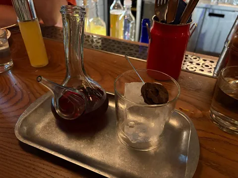
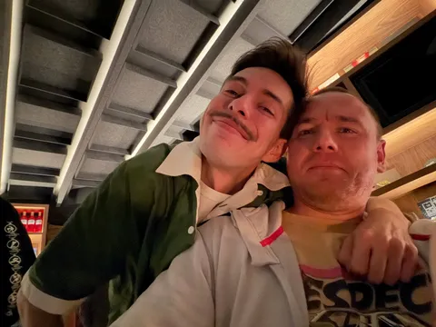
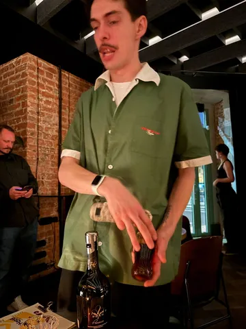
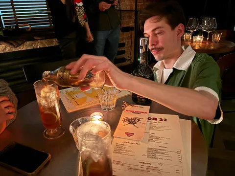
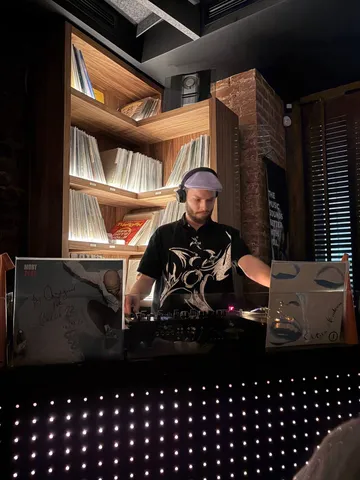
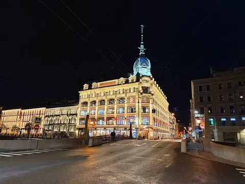
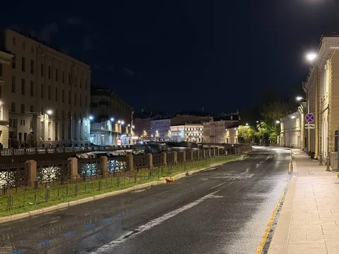

Предсказуемость совпадений
В современных условиях глобализма, высоких технологий и цифровых коммуникаций, хорошей иллюстрацией тесноты мира в узких профессиональных сообществах будет вчерашняя история, когда я
- сидя в баре 1 (Рукс Хэвэн, спб)
- узнал от гостевой смены из бара 2 (Мицва, мск)
- что мой друг-бармен Антон из бара 3 (Полторы комнаты, спб)
- оставил проект бара 4 (null, белград)
- и перебрался в москву в бар 5 (bus, мск)
- но как раз сегодня на гостевой смене в питерском баре 6 (кетч22, спб)
- куда мы немедленно выдвинулись из бара 1 (Рукс Хэвен, спб)
- а навстречу нам выдвинулся Юра из бара 7 (где-то на новой голландии)
- по пути потеряв Сашу (Саш, стыдно!), но если тот по пути пополнил нашу запутанную историю баром номер 8, я вообще не удивлюсь (а Саша пусть в комментах обозначится и объяснится).
Как бы то ни было, мы совершенно незапланированно, но от того ничуть не более неожиданно, оказались в новом для нас баре (Catch22, одобрено!), встретились с Антоном и Юрой, отведали пару свежих авторских инноваций в миксологии (да еще с артистичной подачей от Антона), и слушали на виниле моби, продиджи и многое другое, чем нас радовал отличный диск-жокей за крутым концертным аппаратом, который не ожидаешь встретить в небольшом спик-изи баре. Но для того ведь мы в Питер и ездим?
В современных условиях глобализма, высоких технологий и цифровых коммуникаций, хорошей иллюстрацией тесноты мира в узких профессиональных сообществах будет вчерашняя история, когда я
- сидя в баре 1 (Рукс Хэвэн, спб)
- узнал от гостевой смены из бара 2 (Мицва, мск)
- что мой друг-бармен Антон из бара 3 (Полторы комнаты, спб)
- оставил проект бара 4 (null, белград)
- и перебрался в москву в бар 5 (bus, мск)
- но как раз сегодня на гостевой смене в питерском баре 6 (кетч22, спб)
- куда мы немедленно выдвинулись из бара 1 (Рукс Хэвен, спб)
- а навстречу нам выдвинулся Юра из бара 7 (где-то на новой голландии)
- по пути потеряв Сашу (Саш, стыдно!), но если тот по пути пополнил нашу запутанную историю баром номер 8, я вообще не удивлюсь (а Саша пусть в комментах обозначится и объяснится).
Как бы то ни было, мы совершенно незапланированно, но от того ничуть не более неожиданно, оказались в новом для нас баре (Catch22, одобрено!), встретились с Антоном и Юрой, отведали пару свежих авторских инноваций в миксологии (да еще с артистичной подачей от Антона), и слушали на виниле моби, продиджи и многое другое, чем нас радовал отличный диск-жокей за крутым концертным аппаратом, который не ожидаешь встретить в небольшом спик-изи баре. Но для того ведь мы в Питер и ездим?







238 просмотров · 14 реакций
Открыть в Telegram · Открыть пост на сайте